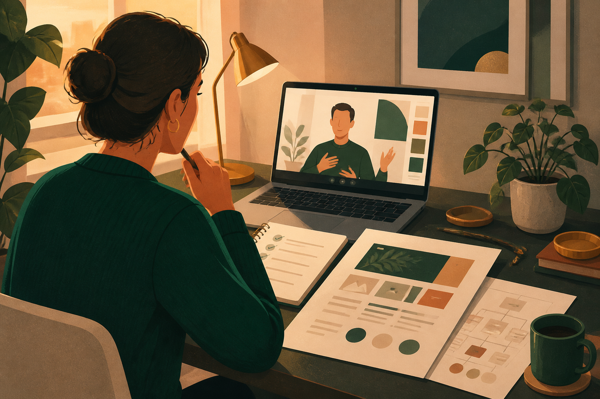

AIを制作工程に活用
ChatGPTなどを使い、構成案・文章・制作準備を効率化。簡単に稼げるという話ではなく、実務の進め方を身につけます。
地方 × AI × Web制作 × 2日間
AI×Web制作を2日間で実践。月5万円の副収入を目指すためのスキルと、案件へ挑戦する土台をつくるオンラインWebスクールです。
LINE登録後、無料相談で現在地を整理。合う場合だけ、受講コースを一緒に選びます。
受講までの流れ
ページを読んでその場で申込みではなく、LINEで相談してから判断できる導線です。未経験の方でも、今の状況に合わせて始め方を整理できます。
副業経験、学習状況、使える時間を確認します。
短期集中か、フォロー込みかを無理なく選びます。
AIを使いながら、HP・LP・UI/UXの土台を作ります。
こんな不安はありませんか
地方では仕事の選択肢や給与水準に限界を感じている。
在宅でできる仕事を探しているが、始め方が分からない。
Web制作やAIに興味はあるけれど、難しそうに感じる。
独学では続きにくく、案件につながるか不安がある。

解決策
企業や店舗のホームページ、サービス申込みにつながるLPは、オンラインで提案・制作しやすい仕事のひとつです。本講座では、AIを企画・構成・文章作成・制作支援に活用しながら、実際に手を動かしてWeb制作の入口をつくります。
LINEで無料相談する
なぜ選ばれるのか
ChatGPTなどを使い、構成案・文章・制作準備を効率化。簡単に稼げるという話ではなく、実務の進め方を身につけます。
数ヶ月の知識学習ではなく、必要なポイントを絞り、実際に作る時間を中心に設計しています。
見た目だけでなく、問い合わせや申込みにつながる導線設計まで学びます。
迷ったらこの順番
コース選びや受講後フォローの必要性は、現在地によって変わります。LINE相談で不安を整理してから、カリキュラムと料金を確認してください。
2日間カリキュラム
DAY 1
DAY 2
身につくスキル
企画、構成、文章作成、制作支援にAIを活用する考え方。
企業・店舗向けホームページ制作の基本と進め方。
申込みや問い合わせにつながるページ構成と訴求設計。
ユーザーが理解しやすく、行動しやすい画面設計。
受講後の未来
案件相談サポート
見積もり、提案、構成、デザイン、顧客対応など、案件に挑戦するときに出てくる疑問を相談できます。アドバイザーの増子さんとともに、学習後の実践を支えます。


他スクールとの違い
長期学習の負担を抑え、まず制作体験へ。
企画・文章・制作支援にAIを活用。
作るだけでなく、行動される設計を学ぶ。
実案件への不安を相談できる環境。
料金
まずは2日間で集中的に学びたい方と、受講後の案件挑戦まで伴走してほしい方に向けて、2つの受講プランを用意しています。
短期集中コース
250000円
AI活用、HP・LP制作、UI/UXを2日間で実践し、副業としてWeb制作に挑戦するための基本スキルを身につけます。
こんな方へ
フォロー込みコース
400000円
2日間の短期集中講座に加え、受講後のフォローと案件相談まで含めたプログラムです。提案・見積もり・制作進行など、実案件へ挑戦する場面を見据えて支援します。
こんな方へ
FAQ
はい。Web制作未経験から初心者の方を想定しています。2日間で完全習得を保証するものではなく、受講後に実践を始めるための土台づくりを目的としています。
オンライン形式のため、地方在住の方でも参加できます。SNSや紹介、オンライン商談を前提に、場所に縛られにくい働き方を見据えます。
収益や案件獲得を保証する講座ではありません。月5万円の副収入を目指すために必要なスキルと実践の土台を2日間で学びます。
案件の進め方、提案、見積もり、構成、デザイン、顧客対応など、実案件に挑戦する際の疑問を相談できます。
まずは無料相談から
相談だけでもOKです。LINE登録後、無料相談へご案内します。